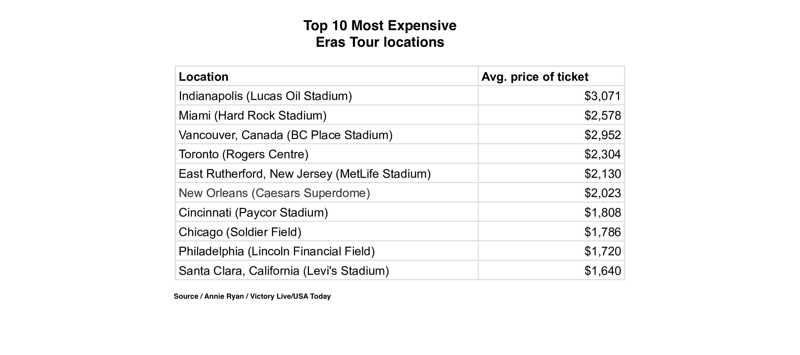
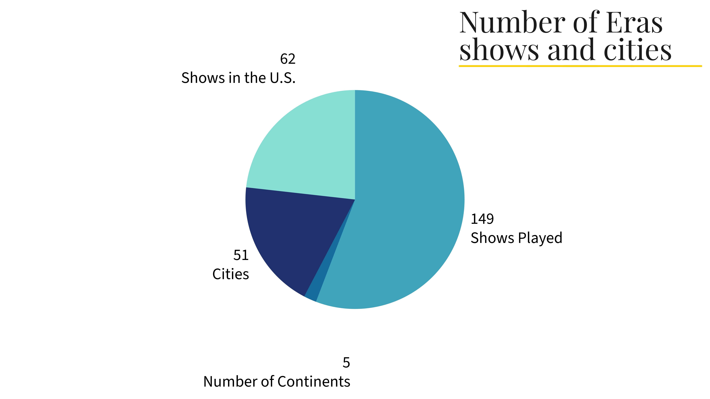
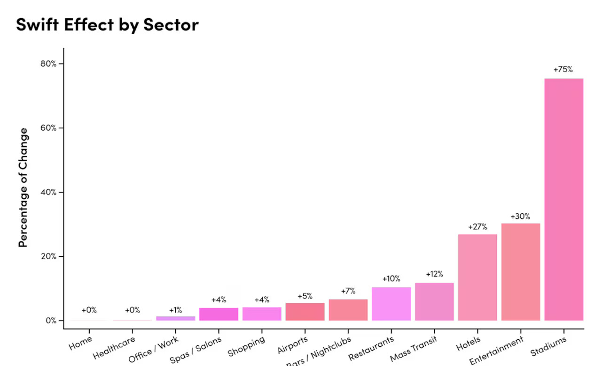

When Taylor Swift kicked off her record-breaking Eras Tour in March 2023, fans around the world rushed to secure tickets, plane rides, hotel rooms and sequined outfits worthy of every era. But while Swifties were preparing for a night of music and nostalgia, cities hosting the tour stops were preparing for something else entirely: an economic boom.
Source: Annie Ryan
Dubbed “Swiftonomics” by media outlets and analysts, Swift’s Eras Tour has brought in more than just applause—it’s been a financial tidal wave. From surging hotel bookings to increased local sales tax revenue, the tour has had measurable effects on cities across North America and beyond.
According to a report released by Victory Live, average ticket prices for Taylor Swift’s tour stops have varied widely by location. In Glendale, Arizona—where the Eras Tour kicked off and fans had yet to fully realize the scale of the spectacle—the average resale price hovered around $529. Soon after, ticket prices drastically increased. Overall, fans were spending an average of $1,300 per show, including tickets, travel, accommodation, outfits, and merchandise. Multiply that by the 3.5 million people who attended the first leg of the tour in the U.S., and it’s no wonder Swift’s impact has been compared to hosting a Super Bowl over 50 times.
The U.S. Travel Association estimated that the tour generated over $5 billion in consumer spending domestically, with cities like Chicago, Los Angeles, and Philadelphia seeing sharp spikes in tourism activity. In Philadelphia, where Swift performed three nights in May 2023, Visit Philadelphia reported hotel occupancy rates jumped nearly 16% compared to the same weekend the previous year. Restaurants in Center City saw a 20-25% increase in reservations, according to data from OpenTable.
What sets this economic surge apart from typical major events is the demographics and behavior of the attendees. You don’t often see this kind of spending from concert-goers. Swifties were booking hotels not just for one night, but entire weekends. Many were traveling from out of state—or even overseas—and treating it as a destination event.
Source: Annie Ryan
A study conducted by SeatGeek showed that 37% of ticket buyers traveled more than 100 miles to attend their show. Social media trends confirmed this “tourism effect,” with fans posting videos of road trips, travel plans, and hotel experiences.
I attended the Las Vegas stop of the Eras Tour during March 2023, and made the trip from Baltimore to Las Vegas and back to Baltimore in 36 hours. Between my sister and me, we probably spent around $2500 total for the hotel, plane tickets, outfit and merch. And I would do it again in a heartbeat. It was the chance of a lifetime.
Source: Annie Ryan/Time Magazine
Swift’s tour wasn’t just felt on a local level. In July 2023, the Federal Reserve Bank of Philadelphia even mentioned the Eras Tour in its Beige Book, noting that hotel revenues in the region were “largely boosted” by the influx of Swifties.
Source: WWBT
Some economists have gone as far as to argue the tour contributed to local inflation in specific cities. At the same time, the tour created temporary job boosts in so many sectors listed above. Local business owners often reported needing to hire extra help or extend hours to meet demand as well.
With the international leg of the tour having wrapped in 2024 and a film version of the concert smashing box office records, the Eras Tour set a new precedent for what artists could achieve, not just culturally, but economically.
After everything that had happened over the past few years, especially with lockdown, everyone was finally starting to feel normal again. “We were in an experience economy where people craved going out and participating in social events,” said Alice Enders, a music industry analyst at Enders Analysis and a former senior economist at the World Trade Organization.
Throughout the tour, it became clear that wherever Taylor Swift went, more than just friendship bracelets were exchanged—millions of dollars were too.